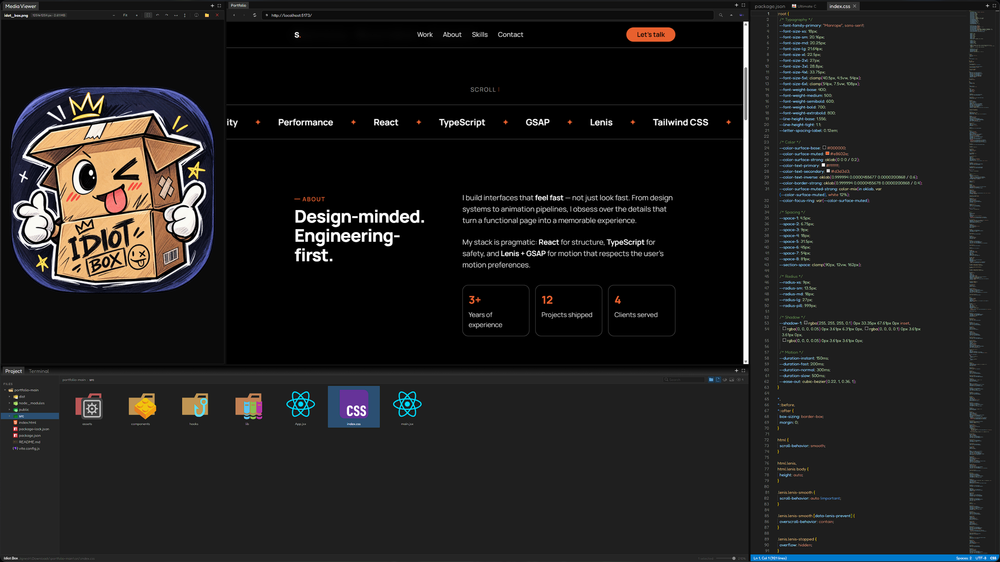
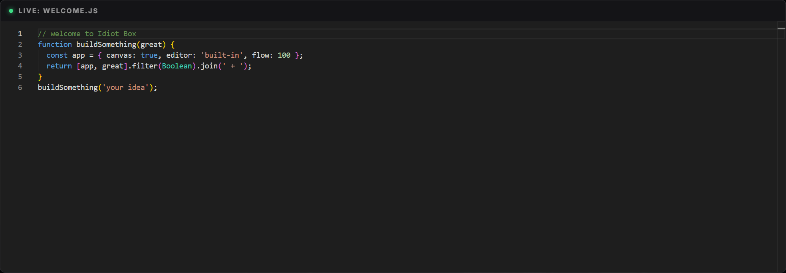
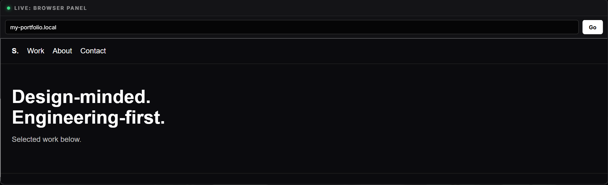
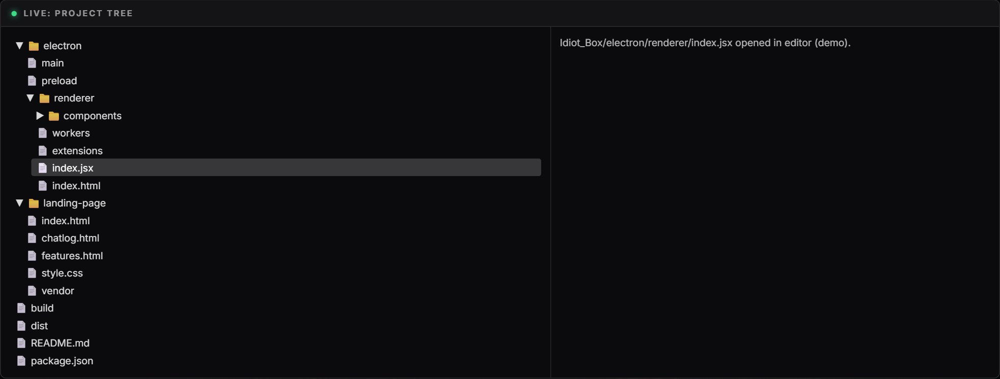
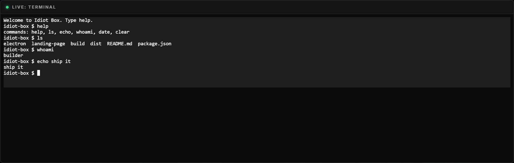
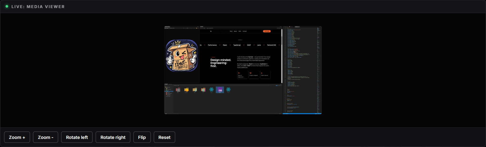
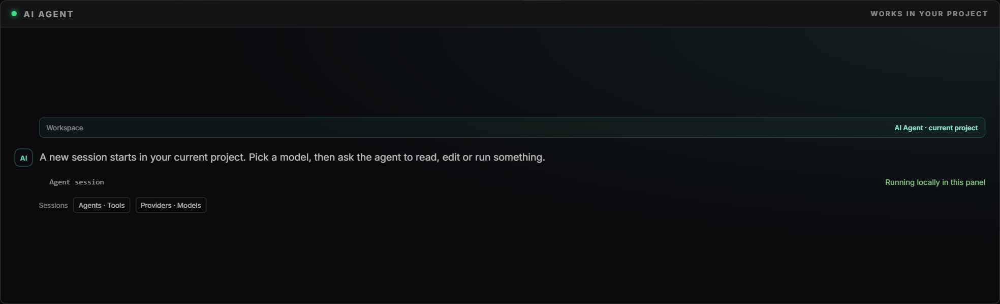

01
One window, whole workflow
Map, code, preview and ship without juggling five tools. Everything lives side by side and stays in sync, with no alt-tab and no lost context.
- Map
- Code
- Preview
- Ship

Idiot Box · Features
Map, code, preview and ship without juggling five apps. The editor, AI agent, terminal, browser, project map and media viewer sit side by side and stay in sync, so you never lose the thread.
Map, code, preview and ship without juggling five tools. Everything lives side by side and stays in sync, with no alt-tab and no lost context.

A professional-grade editor with syntax highlighting for 50+ languages, minimap, autosave, and files that refresh live when something else changes them.

Your dev servers in tabs. Open localhost previews with automatic port detection, right next to your code, and keep the page you are building in view.

Files without friction. Drag and drop, multi select, clipboard, undo and redo, all in a tree that keeps up with you and stays honest about what changed.

A full terminal with splits and new panels, opened right where your project lives. Run the build, watch the log, fix the thing, all without leaving the window.

Zoom, rotate, flip and pan images and video without ever leaving the app. Check the asset against the layout you are building instead of opening another window.

Bring a coding assistant into the same window as your code. Start a session in the current project, choose the model or provider you prefer, and ask the agent to read, edit or run work alongside you.

More in the box
Branch graph, staged and unstaged changes, stage or discard individual hunks, commit and amend, and push without leaving the window. Ask the agent to draft a commit message when you are done.
See every listening port, then share a local server through a Microsoft Dev Tunnels URL. Project-only or public access is one toggle away.
Every save, live edit and replace leaves a snapshot. Preview any earlier version of a file and restore it without touching Git.
Search with literal text or regex, filter the matches, and replace across the whole project with a single undo step.
Sketch architecture and flows on an infinite Excalidraw canvas, with live component previews embedded right in the drawing. Drawings save per project.
Render a component in an isolated preview. Changes show up immediately, before you save, with runtime errors caught in the preview itself.
Discover Jest, Vitest, Mocha, node:test, pytest and unittest projects, run suites from the Test Explorer, and read streamed output with pass/fail summaries.
Debug Node.js and Python with breakpoints, call stack, variables, watches and an evaluate console, all inside the same workspace.
Open .ipynb files in a Jupyter-like cell editor. Run Python cells against a persistent kernel, so variables and imports survive until you restart.
Run supported VS Code-compatible extensions in a local extension host, so familiar tools come along for the ride.
Create QEMU desktop VMs and Android virtual devices, watch the live display and inspect logs without leaving the IDE.
One palette for files and every app command. Ctrl+P for both, Ctrl+Shift+P or F1 for commands only.
Let compatible local AI clients drive the IDE: project files, Git, the shell, browser, editor tabs and other tools.
Come back to the same window state, docked layout and open tabs after a restart. Terminal, browser and console titles restore too.
Open source. Free to use. Grab the latest build and put your whole project on one calm surface.